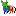

'canvasShapes' (namespace) - Library of creation, manipulation and calculation of plane geometric figures.
Library: 'PolyArea'.
Author: Juan José Guerra Haba - dinertron@gmail.com - Marzo de 2016 
License: Free BSD. & Open GPL v.3. Keep credit, please.
Versión: 0.9.0 BETA
File: canvasShapes.js Main Class: PolyArea.js
canvasShapes
It is a library for drawing geometric figures associated events.
It shows geometric calculations (areas, perimeters, ...) and supports a free drawn mode "freehand"; also it has a graphical interface with buttons bar and an options window where display / modify some of the multiple parameters supported.
'CANVAS-SHAPES' is actually a namespace that hold the library 'PolyArea' which is responsible for the bulk of drawn figures,
but also houses objects and methods useful in separate modules.
HTML element works on a 'canvas' that constructs itself and on which it has implemented a reception event for the creation and
modified the figures (points, segments, ...)
Usage
After loading the file in the 'head' zone (<script src = "... / canvasShapes.js" ...> </ script>) you can start to use the library under the namespace: 'canvasShapes'. It could commence for example, with the viewing of the UI by the method:
canvasShapes.render( {id: "idElement"} );where the string 'idElement' is expected that identifies the container element, that is, the element
in which all imbibing UI.
From here everything is done visually and interactively in the GUI.
Features:
- OOP Philosophy, classes, inheritance, modularity, abstraction, ...
- ECMASCRIPT 6 features:
"use-strict". - Cross-Browser.
- Modularity and abstraction by js-modules and Closures.
- Grouping of modules in a single file to simplify the call in the 'head'.
- Self-content CSS, media-queries, 'bootstrap' patterns.
- OUTSTANDING !! : Assigning events to the figures in the 'canvas'.
This is really INNOVATIVE and that everyone knows that drawn on a canvas does not allow events, since they are not objects, but the library does implement recognizing the figures drawn as objects.
Developing
Developed by GuerraTron @2016
Tools
Notepad ++
Created with Nodeclipse (Eclipse Marketplace, site) Nodeclipse is free open-source project that grows with your contributions.
Author:
I hope it can be useful to someone as it has been for me. In this case it would be appreciated email commenting
use or suggestions for future improvements.
¡ KEEP CREDITS, PLEASE !